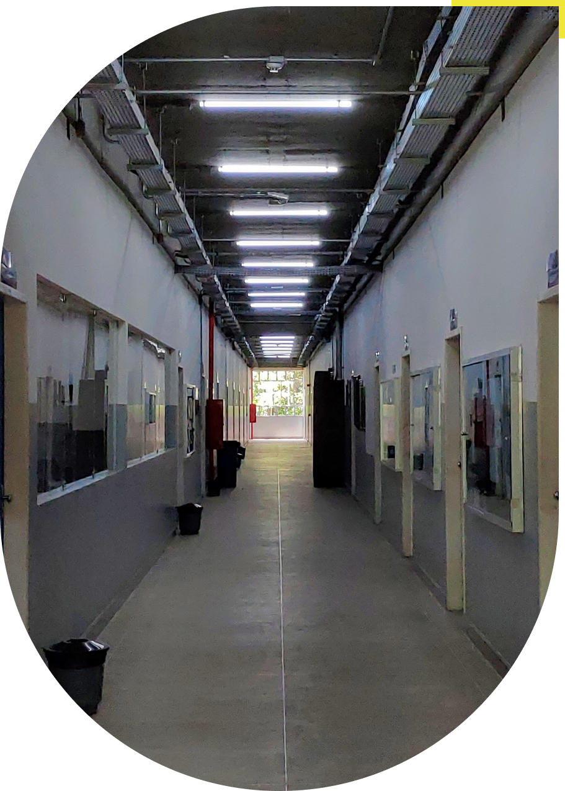

Sobre o
Colegiado
O Colegiado de Curso é órgão da administração setorial de deliberação coletiva, supervisão e coordenação didático-pedagógica do curso e integra a estrutura da Universidade Estadual de Santa Cruz. Assim, o colegiado está intimamente ligado aos aspectos pedagógicos do curso, definindo o projeto pedagógico, grade curricular, dentre outros. Este site visa ser um elo entre a comunidade, estudantes e a instituição, promovendo maior integração e dinamismo na comunicação entre ambos.
Conheça a coordenação

Composição - Biênio 2020-2022
Arraste para mais informações
Matéria
Departamento/Área
Membro
Coordenação
Arraste para mais informações